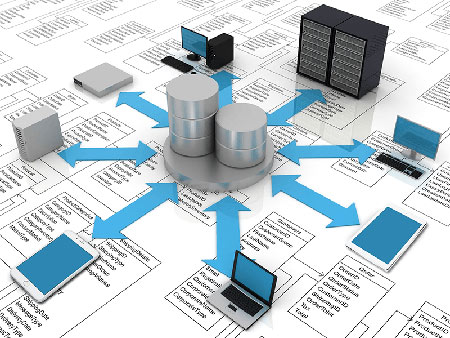

Las bases de datos se usan ampliamente. Algunas de sus aplicaciones representativas son:
- Banca: información de los clientes, cuentas, préstamos y transacciones bancarias.
- Líneas aéreas: reservas e información de horarios.
- Universidades: información de los estudiantes, matrículas en las asignaturas y cursos.
- Transacciones de tarjetas de crédito: compras con tarjeta de crédito y la generación de los extractos mensuales.
- Telecomunicaciones: para guardar un registro de las llamadas realizadas, generar las facturas mensuales, etc.
- Finanzas: almacenamiento de información sobre compañías, datos del mercado en tiempo real, compraventa en línea, etc.
- Ventas: información de clientes, productos y compras.
- Comercio en línea: datos de ventas, seguimiento de los pedidos Web, generación de listas de recomendaciones y mantenimiento de evaluaciones de productos en línea.
- Producción: gestión de proveedores, seguimiento de la producción de artículos, inventarios en los almacenes y pedidos.
- Recursos humanos: información sobre los empleados, salarios, impuestos sobre los sueldos y prestaciones sociales, y para la generación de las nóminas.